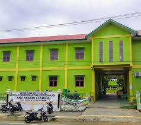

SMP Negeri 1 Sabang merupakan sekolah berakreditasi A yang berkomitmen menciptakan lingkungan pendidikan unggul di Jantung Kota Sabang.
SMP Negeri 1 Sabang adalah institusi pendidikan menengah pertama negeri yang terletak strategis di Kota Sabang. Sebagai sekolah dengan Akreditasi A, kami terus bertransformasi untuk memberikan layanan pendidikan terbaik melalui tenaga pendidik profesional dan lingkungan belajar yang kondusif.
Kami percaya bahwa setiap siswa memiliki potensi unik. Dengan kurikulum yang adaptif dan beragam kegiatan ekstrakurikuler, kami membimbing siswa untuk menjadi pribadi yang religius, mandiri, dan berdaya saing tinggi di era global.
Terwujudnya lulusan yang bertaqwa, cerdas, terampil, dan berwawasan lingkungan.
Menyelenggarakan pembelajaran berkualitas, menanamkan nilai karakter, dan mengoptimalkan potensi akademis serta non-akademis.

Tenaga Pendidik
Total Siswa
Rombongan Belajar
% Ruang Layak
Mendukung proses belajar mengajar dengan sarana yang memadai.
15 Ruang kelas yang nyaman dengan standar kelayakan 100%.
Fasilitas praktek sains untuk mendukung kurikulum eksperimental.
Koleksi buku lengkap untuk meningkatkan literasi siswa.
Metode pembelajaran fokus pada interaksi tatap muka tanpa ketergantungan internet.
Pengelolaan operasional sekolah yang efisien dan berwawasan lingkungan.
Sarana ibadah yang bersih dan nyaman untuk kegiatan keagamaan.
Memimpin dengan visi untuk memajukan pendidikan di Sabang.
Manajemen data dan administrasi pendidikan.
97,3% Guru telah bersertifikasi pendidik profesional.
Jln. Yos Sudarso, Kec. Sukajaya, Kota Sabang, Prov. Aceh
065221091
smpn1_sabang@gmail.com